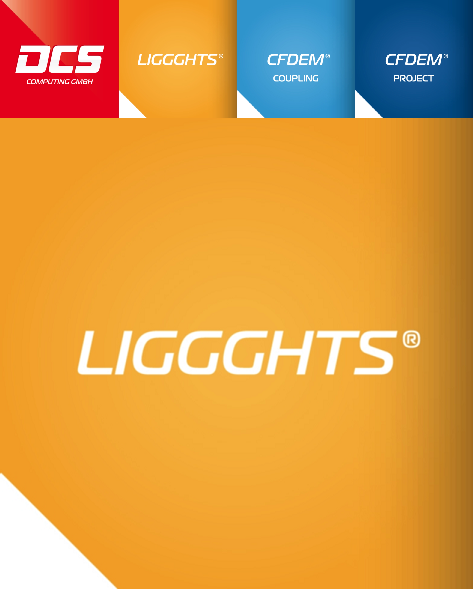

LIGGGHTS(R)-PUBLIC Documentation, Version 3.X¶

LIGGGHTS(R)-PUBLIC DEM simulation engine¶
released by DCS Computing Gmbh, Linz, Austria, www.dcs-computing.com , office@dcs-computing.com¶
LIGGGHTS(R)-PUBLIC is open-source, distributed under the terms of the GNU Public License, version 2 or later. LIGGGHTS(R)-PUBLIC is part of CFDEM(R)project: www.liggghts.com | www.cfdem.com
Core developer and main author: Christoph Kloss, christoph.kloss@dcs-computing.com
LIGGGHTS(R)-PUBLIC is an Open Source Discrete Element Method Particle Simulation Software, distributed by DCS Computing GmbH, Linz, Austria. LIGGGHTS (R) and CFDEM(R) are registered trade marks of DCS Computing GmbH, the producer of the LIGGGHTS (R) software and the CFDEM(R)coupling software See http://www.cfdem.com/terms-trademark-policy for details.
LIGGGHTS (R) Version info:¶
All LIGGGHTS (R) versions are based on a specific version of LIGGGHTS (R), as printed in the file src/version.h LIGGGHTS (R) versions are identidied by a version number (e.g. ‘3.0’), a branch name (which is ‘LIGGGHTS(R)-PUBLIC’ for your release of LIGGGHTS), compilation info (date / time stamp and user name), and a LAMMPS version number (which is the LAMMPS version that the LIGGGHTS(R)-PUBLIC release is based on). The LAMMPS “version” is the date when it was released, such as 1 May 2010.
If you browse the HTML doc pages on the LIGGGHTS(R)-PUBLIC WWW site, they always describe the most current version of LIGGGHTS(R)-PUBLIC. If you browse the HTML doc pages included in your tarball, they describe the version you have.
LIGGGHTS (R) and its ancestor LAMMPS:¶
LAMMPS is a classical molecular dynamics simulation code designed to run efficiently on parallel computers. It was developed at Sandia National Laboratories, a US Department of Energy facility, with funding from the DOE. It is an open-source code, distributed freely under the terms of the GNU Public License (GPL). The primary developers of LAMMPS are Steve Plimpton, Aidan Thompson, and Paul Crozier. The LAMMPS WWW Site at http://lammps.sandia.gov has more information about LAMMPS.
The LIGGGHTS(R)-PUBLIC documentation is organized into the following sections. If you find errors or omissions in this manual or have suggestions for useful information to add, please send an email to the developers so we can improve the LIGGGHTS(R)-PUBLIC documentation.
Once you are familiar with LIGGGHTS(R)-PUBLIC, you may want to bookmark this page since it gives quick access to documentation for all LIGGGHTS(R)-PUBLIC commands.